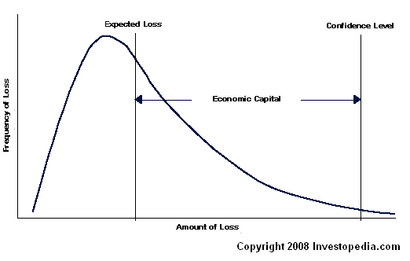

The amount of capital that a firm, usually in financial services, needs to ensure that the company stays solvent. Economic capital is calculated internally and is the amount of capital the firm should have to support any risks it takes on.
The measurement process involves converting a given risk to the amount of capital that is required to support it. The calculations are based on the institution's financial strength (e.g., credit rating) and expected losses.
Financial strength is represented by the probability of the firm not becoming insolvent over the measurement period and is the confidence level in the statistical calculation. Most banks will use a confidence measurement of between 99.96% and 99.98%, which is the insolvency rate expected for an institution with a AA or Aa credit rating.
The firm's expected loss is the anticipated average loss over the measurement period. Expected losses represent the cost of doing business and are usually absorbed by operating profits.
The relationship between frequency of loss, amount of loss, expected loss, financial strength and economic capital can be seen in the following graph:
Economic capital is used for measuring and reporting market and operational risks across a financial organization. Economic capital measures risk using economic realities rather than accounting and regulatory rules, which have been known to be misleading. As a result, it is thought to give a more realistic representation of a firm's solvency.
{kind=link}